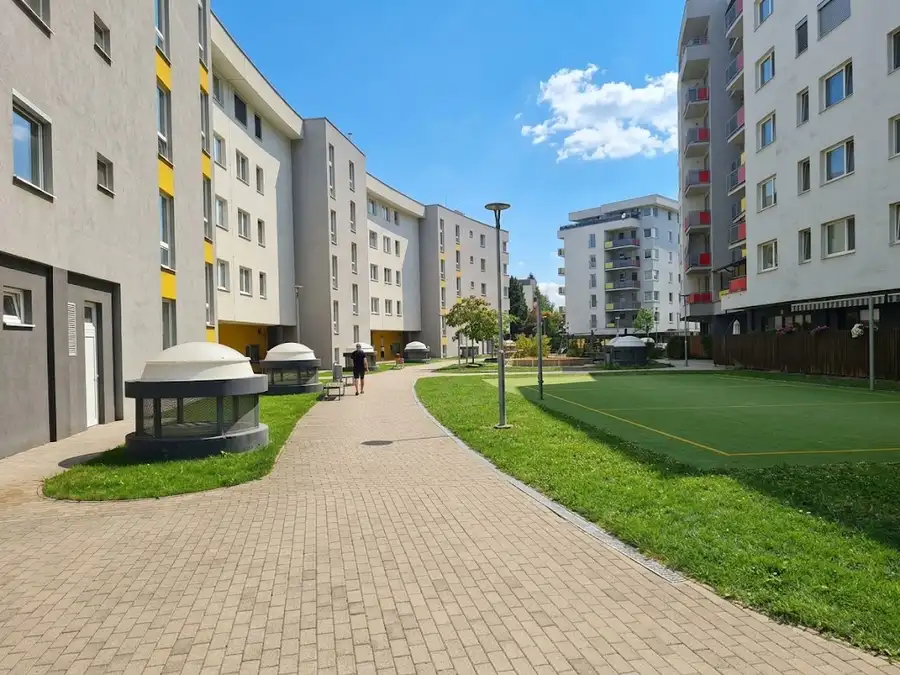
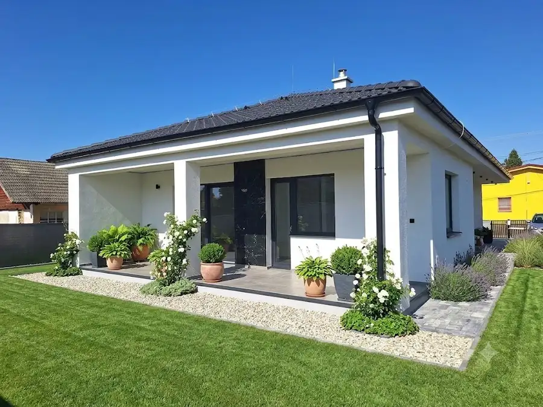
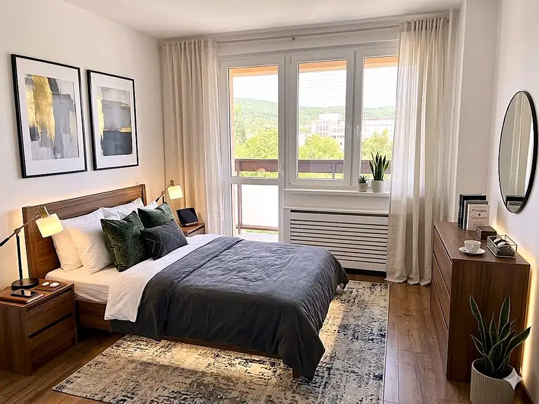

AZ. Rozprávková záhrada priamo pri ramene Dunaja (Len 10 min. od BA!) - DOKONALÝ ÚNIK PRED STRESOM Z MESTA
Senec
- Plocha800 m²
- VlastníctvoOsobné
O nehnuteľnosti
🌲 Absolútne súkromie a bezpečnosťZabudnite na preplnené záhradkárske osady. K nehnuteľnosti vedie poľná cesta chránená rampou, pričom povolenie na prechod majú výhradne majitelia týchto dvoch záhrad. Dokonalé bezpečie a pokoj sú tu zaručené. Pritom do Bratislavy autom dorazíte už za 10 minút a autobusová zastávka (s priamymi spojmi) je vzdialená len 10 minút pokojnej chôdze (1 km) cez prírodu. Rovnako ďaleko je to aj do centra obce Malinovo.📐 Pozemok snov: 8 árov (Možnosť rozdeliť na polovicu!)Pozemok je kompletne upravený, rovinatý a starostlivo udržiavaný. Máte radi spoločné akcie s priateľmi alebo rodinou? Záhradu je možné rozdeliť na dve samostatné 4-árové parcely – ideálna príležitosť pre spriaznené rodiny, ktoré chcú dovolenkovať vedľa seba.Dispozícia:🏡 Vybavenie: Všetko, čo potrebujete na dokonalý reštartÚtulná chatka: Spodná časť slúži ako kuchynka so sporákom a rúrou na propán-bután + rozkladacia posteľ. V podkroví sa nachádza priestor na spanie.Veľký altánok s pivnicou: Ideálne miesto na letné grilovačky, pod ktorým sa skrýva chladná pivnica na uskladnenie zásob.Hospodárska budova s druhou pivnicou: Skvelý priestor na náradie či úrodu z vlastného malého vinohradu a ovocných stromov. Komfort vonku: Vybudované ohnisko pre večerné posedenia a suché WC, ktoré je kompletne vykachličkované.Voda a energie: Na pozemku je vlastná narážaná studňa s výkonným čerpadlom. Osvetlenie je aktuálne riešené autobatériami.BONUS: Rozbehnutý projekt na dotiahnutie elektriny priamo k pozemku! Alternatívne je tu možnosť nízkonákladovej investície do solárnych panelov s batériami.Lokalita:🎣 Raj pre rybárov, poľovníkov a milovníkov prírodyPoloha priamo na ramene Dunaja ponúka jedinečnú možnosť vybudovať si vlastné mólo na chytanie rýb alebo kotvenie lodí. K záhrade navyše získate malý čln s motorom, takže na riečne dobrodružstvá môžete vyraziť hneď v prvý deň.Cena: 120 000EURZhrnutie:Lokalita: Malinovo (na samote pri lese a ramene Dunaja, 10 min. od BA, 1 km od obce/busu). Výmera: 800m2 (možnosť rozdeliť na 2x 400m2)Vybavenie: Chatka, veľký altánok, 2x pivnica, hosp. budova, studňa, čln s motorom, vinohrad, ovocné stromy.Vymeňte mestský betón za zelený raj.Táto ponuka je na trhu unikátom, ktorý sa neobjavuje každý deň.Teším sa na Vás na obhliadke!Ing. Viera UvírováAndel & Zachar, s.r.o.📞 +421 905 363 593✉️ uvirova@andelzachar.sk
Parametre
| Druh | Rekreačný pozemok |
|---|---|
| Dátum zverejnenia | 6. 7. 2026 |
| Elektrina | Pri pozemku |
| Odpadové vody | Na pozemku - Septik |
| Plocha pozemku | 800 m² |
| Plyn | Nedostupné |
| Terén pozemku | Iný |
| Typ | Predaj |
| Vlastníctvo | Osobné |
| Voda | Na pozemku - Studňa |
Kde to je


Mohlo by Vás zaujímať

BytNové10 375 000 €AZ. Exkluzívne: 3-izbový byt s loggiou v obľúbenej novostavbe Petržalské dvory Petržalka, Bratislava 3-izbový83 m²2. podlažie * Užitková plocha: 83 m² * Loggia: 5 m² * Poschodie: 2. NP (s výťahom) * Stav: Novostavba (kolaudácia 2018) * Zariadenie: Kompletne zariadený *…
DomNové10 287 000 €AZ. TOP PONUKA: Luxusný 4-izbový bungalov v Radave v prémiovej kvalite a dizajne Radava 129 m² Základné parametreÚžitková plocha: Veľkorysých 129 m2 inteligentne premyslenej dispozícieZastavaná plocha domu: 170 m2 + 27 m2 kompletne prestrešená…
BytNové10 283 000 €AZ. EXKLUZÍVNE! Nadštandardný 3-izbový byt po kompletnej rekonštrukcii s výhľadom na Malé Karpaty Nové Mesto, Bratislava 3-izbový85 m²5. podlažie CENA STANOVENÁ ZNALCOM!Táto obnova nebola len kozmetická. Premenou prešlo úplne všetko, vrátane „neviditeľných“, no kľúčových prvkov – kompletne nová…